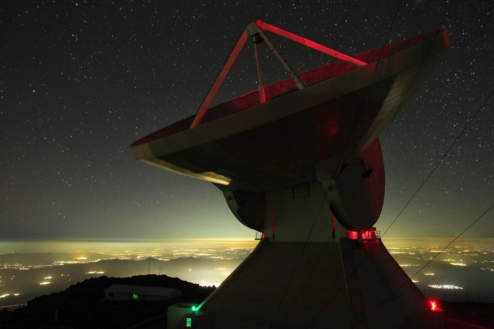

Nine UMass Amherst Faculty Awarded NSF CAREER Awards

I am honored to be included among the nine UMass Amherst faculty members who were awarded NSF CAREER grants in the 2022/2023 academic year. The university summarizes all of the excellent research to come through this news article. The Faculty Early Career Development (CAREER) Program is a foundation-wide activity that offers the NSF’s most prestigious awards in support of early career faculty who have the potential to serve as academic role models in research and education and to lead advances in the mission of their department or organization.
Astronomy’s Whitaker has received $799,007 to better understand how early galaxies “stalled” when the universe was forming.
Studies show that early galaxies were surrounded by large gas reservoirs that were sustained by the cosmic web, which should have allowed for a steady formation of new stars. However, only three billion years after the Big Bang, half of these massive galaxies stopped forming new stars. Whitaker’s team will use data from the Large Millimeter Telescope and Subaru Telescope to map the distribution of galaxies and their molecular gas throughout most of the history of the universe. They will also establish a program at the UMass Amherst to provide research opportunities for underrepresented groups in STEM fields.
“What excites me most about this project is the opportunity this funding presents to support historically excluded groups in performing cutting edge astrophysics research,” says Whitaker. “Our students will confront theory with observations to help unravel the mystery of why the most massive galaxies formed and quenched remarkably early.” The group will conduct annual workshops and externships for girls from low-income school districts, giving them hands-on experience with real data. This will help to promote inclusion and equity for all aspiring astronomers.
In the course of her research, Whitaker and her team will address fundamental questions about massive galaxy evolution. By mapping degree-scale statistical populations of massive galaxies, the team will connect their environments from the Subaru Telescope/Prime Focus Spectrograph to their cold gas, as traced by dust using the TolTEC instrument on the Large Millimeter Telescope. By using the most sophisticated cosmological simulations to date that include the physics of dust formation, growth and destruction, the team will further perform an apples-to-apples analysis of mock galaxies to understand systematics and calibrate observations. Through linking star formation and cold gas across diverse galaxy habitats, the team will develop a physical model explaining the key processes responsible for the assembly of early massive galaxies through to the present day.